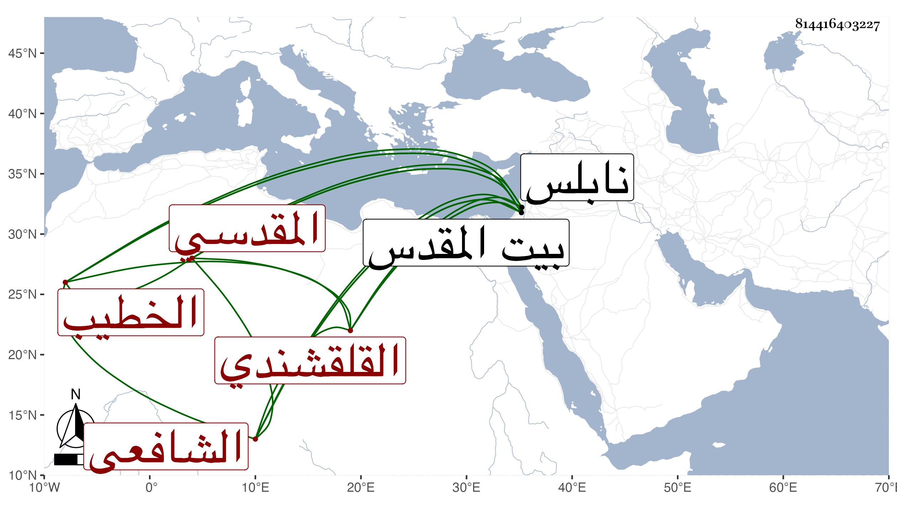

0902Sakhawi.DawLamic.ITO20230111-ara1.EIS1600.814416403227
Biography ID: 814416403227
أحمد بن عبد الرحيم بن محمد بن إسماعيل بن علي بن الحسن بن علي بن إسماعيل بن علي بن صالح بن سعيد الشهاب أبو البهاء أبو حامد القلقشندي المقدسي الشافعي الخطيب أخو العلاء علي ابنا التقي أبي بكر الآتيين . ولد في سابع عشر رمضان سنة ثمانمائة ببيت المقدس ونشأ بها فقرأ القرآن عن العلاء ابن اللفت الضرير وحفظ التنبيه وعرضه على الشهاب بن الهائم والشمس الهروي وغيرهم وسمع الحديث على الشهاب بن الناصح والشمس محمد بن سعيد شيخ زاوية الدركاه وأبي إسحاق إبراهيم بن الحافظ أبي محمود ويوسف الغانمي ومحمد بن يوسف التازي وغزال عتيقة عمه في آخرين وبنابلس على العلاء علي بن محمد بن السيف وأجاز له العراقي والهيثمي والصدر المناوي وآخرون واشتغل يسيرا وتنزل طالبا بالصلاحية فقيها في سنة إحدى عشرة ثم معيدا بها وكذا في ربع الخطابة بالمسجد الأقصى كلاهما بعد موت والده سنة إحدى وعشرين ، لقيته ببيت المقدس فحملت عنه أشياء وكان خيرا متواضعا من بيت علم ورياسة . وهو جد الصلاح خليل الجعبري لأنه مات في رجب سنة تسع وتسعين واستقر بعده في ربع الخطابة أخوه فصار معه النصف فيها .
